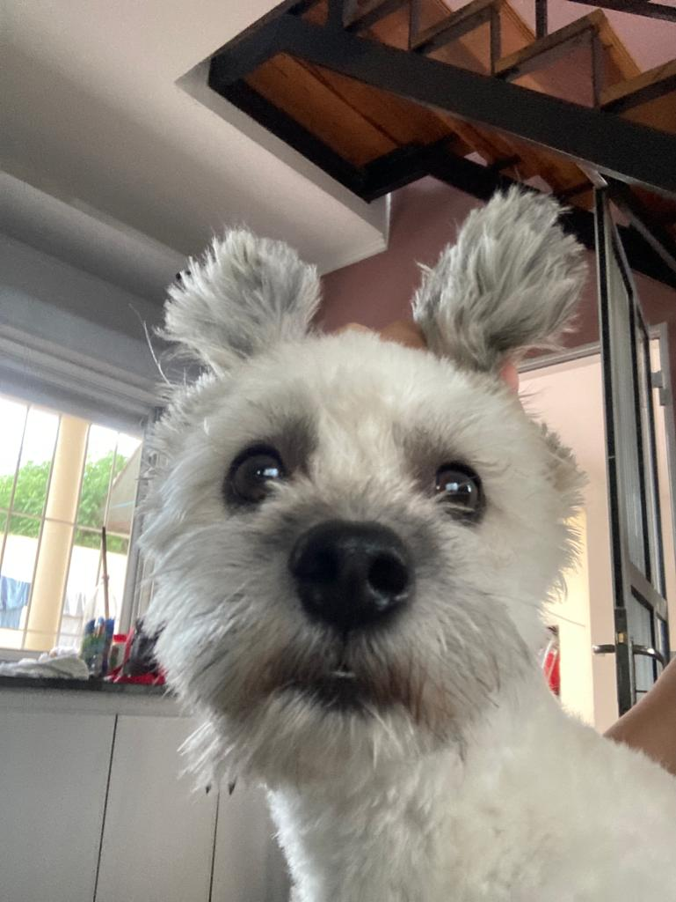

La vida de Tango

Tango es un carismático perro nacido el 14 de julio de 2020 en Concepción del Uruguay, Argentina. A lo largo de su vida, ha vivido diversas aventuras que lo han llevado a cruzar fronteras ya soñar con metas extraordinarias. Tango, cuyo dueño es Omar, es un perro lleno de energía y curiosidad. A pesar de sus orígenes en Argentina, pronto emprendió un emocionante viaje que lo llevó a tierras lejanas en Francia. En este país europeo, ha disfrutado de nuevas experiencias y culturas.

Una de las características más peculiares del Tango es su pasión por el fútbol. A menudo, se une a su dueño Omar para ver emocionantes partidos y celebrar los goles con entusiasmo. No hay duda de que este perro argentino lleva el amor por el fútbol en su ADN. Otra de las particularidades del Tango es su afición por el mate, una bebida tradicional sudamericana. Con elegancia, se sienta a disfrutar de este brebaje junto a sus seres queridos, creando momentos especiales de conexión.
Pero lo que hace que Tango sea verdaderamente único es su ambicioso sueño: convertirse en un investigador de renombre en la NASA. A pesar de ser un perro, su determinación y su espíritu aventurero lo impulsarán a soñar en grande. Quién sabe, tal vez algún día lo veremos explorando las estrellas y contribuyendo al conocimiento científico.
Así concluye la historia de Tango, un perro con grandes aspiraciones que nos enseña a nunca dejar de soñar y a abrazar la vida con entusiasmo y determinación, sin importar cuán inusuales sean nuestros sueños.